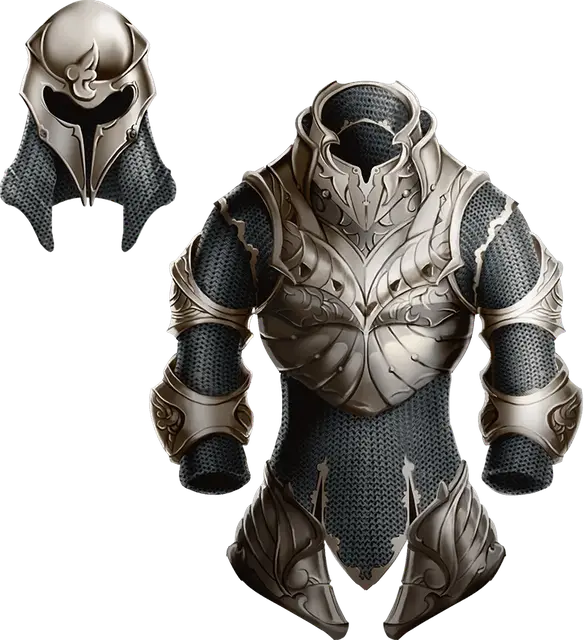

Доспех сопротивления
Armor of Resistance
Доспех (любой Лёгкий, Средний или Тяжёлый), редкий (требуется настройка)

Рекомендованная стоимость 4 000 ЗМ
Пока вы носите этот доспех, вы обладаете Сопротивлением одному из типов урона. Мастер выбирает тип урона или определяет его броском по следующей таблице.
| 1к10 | Тип урона |
| 1 | Звук |
| 2 | Излучение |
| 3 | Кислота |
| 4 | Некротический |
| 5 | Огонь |
| 6 | Психический |
| 7 | Силовой |
| 8 | Холод |
| 9 | Электричество |
| 10 | Яд |